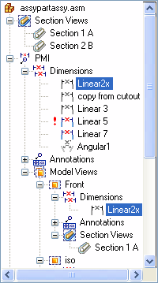

Add or remove PMI elements in a model view
There is a complete list of all PMI dimensions and all PMI annotations that have been created in the document under the PMI collection on PathFinder. Individual dimensions and annotations that have been added to a model view are listed under the specific model view name.
Add a PMI element to a model view
-
On the Assembly or Feature PathFinder, expand the Dimensions or Annotations list under the PMI collection.
-
On PathFinder, right-click the PMI dimension or annotation name that you want to add to a model view, and then choose Add To Model View from its shortcut menu.
-
In the Add To Model View dialog box, select one or more model view names.
-
Click OK to add the dimension or annotation to the list of PMI elements that are associated with the model view.
Tip:To locate a PMI element you added, expand the Dimensions or Annotations collection under the model view name. In this example, dimension Linear2x was added to model view Front.

Tip:-
PMI elements that have been added to a 3D model view and are shown in the view when you close the model view editing session, and they are added to the model view definition on PathFinder.
-
PMI elements that are have been added to a model view but are hidden in the view when you close the model view editing session are removed from the model view definition on PathFinder.
-
Remove a PMI element from a model view
-
On PathFinder, click the dimension or annotation name under the model view name.
-
From the PMI element shortcut menu, choose Remove From Model View .
-
In the Remove From Model View dialog box, click the model view name(s) from which you want to remove the dimension or annotation.
-
Click OK to remove the dimension or annotation from the list of PMI elements that are associated with the model view.
How do I
Display and edit PMI elementsAdd PMI dimensions and annotations
Select multiple reference elements
Create PMI dimensions from the assembly level
Place a PMI dimension using an intersection point
Set a PMI dimension and annotation plane
Show custom occurrence properties in PMI
Move PMI elements in 3D
Reposition PMI text, lines, and arrows
Copy PMI elements from a sketch or feature
Learn more
PMI dimensions and annotationsPMI edit handles and cursors
Placing PMI dimensions using intersection points
Look up more details
Lock Plane commandLock Dimension Plane command bar
Move Dimension command
Add To Model View command
Remove From Model View command